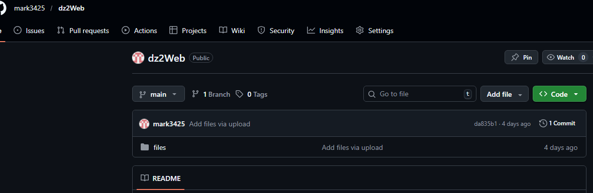
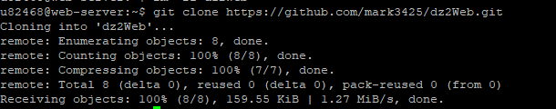
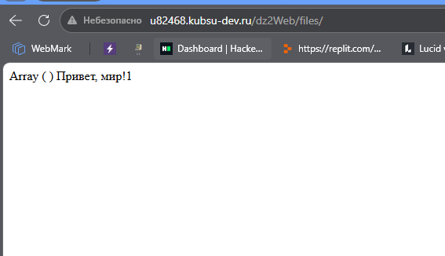
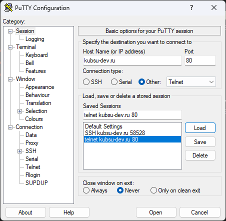
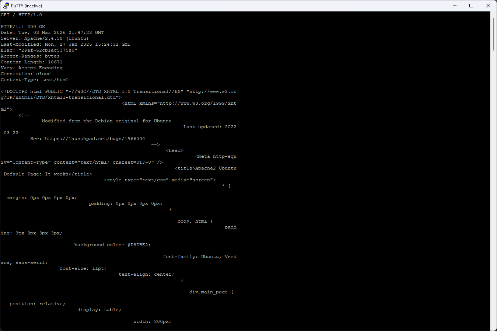
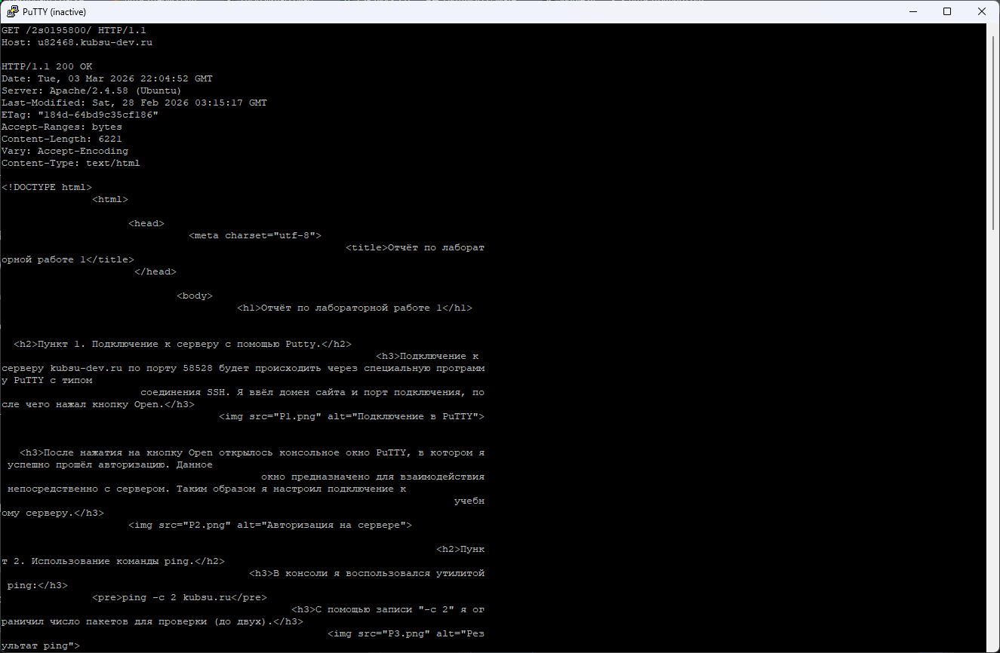
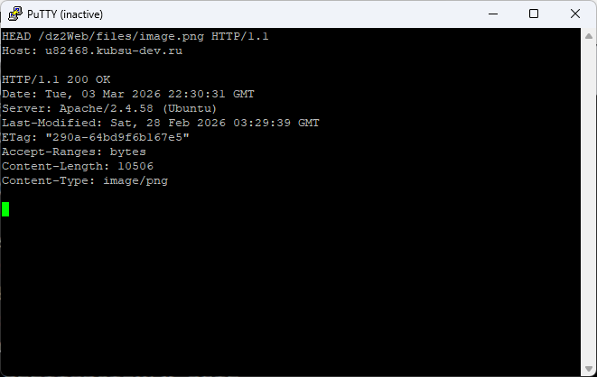
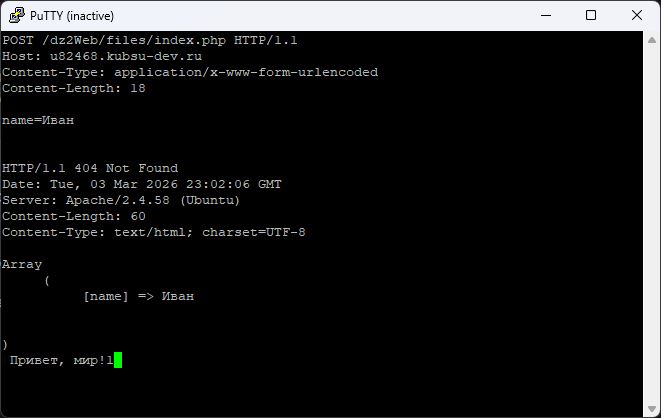
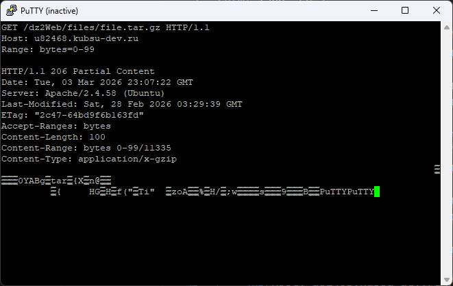
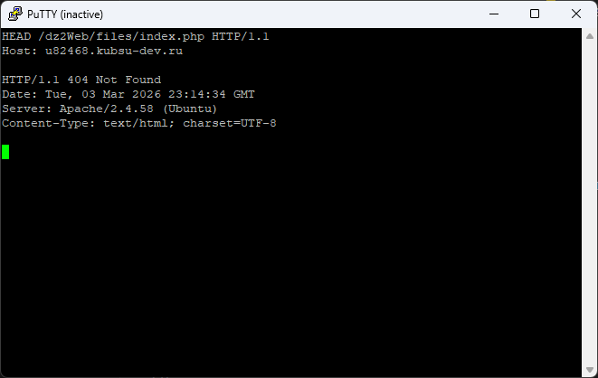

Создал репозиторий в git, залил туда файл. Теперь с Git нужно залить файл на учебный сервер. Для этого я использовал Putty. Делал всё как в первом задании. После переноса убедился в работоспособности файла index.php с помощью браузера.



Выполнял через программу Putty, для подключения к kubsu-dev.ru использовал протокол telnet, по стандартному для него порту 80.

Открылось пустое консольное окно, ожидающее ввода. После отправки HTTP запроса. Ответ пришёл успешно, об этом всидетельствует код 200. в итоге я получил главную страницу методом GET по протоколу HTTP версии 1.0

Аналогичное задание, но нужно получить внутреннюю страницу и по другой версии протокола. в качестве внутренней страницы возьмём страницу с первого задания. Здесь мне также пригодилась кованда Host, без неё запрос выполнить не получилось. Он нужен для того, чтобы понять какой сайт нам требуется.

Я решил определять размер файла с помощью HTTP запроса. Хотя это и можно сделать через bash через ssh подключение командой ls -lh file.tar.gz . После ввода HTTP запроса, появился ответ. значение параметра Content-Length было равно 11335, а значение Accept-Ranges равно bytes, это говорит о том, что размер данного файла равен 11335 байт.
Делал так же через HTTP запрос HEAD. Указав хост и пусть к файлу. для определения медиатипа файла необходимо посмотреть на значение параметра Content-Type. В нашем случае оно равно image/png.

Отправка комментария будет проиходить через Запрос с командой POST, я указал адрес index.php, хост, Content-Type, Content-Length. Type говорит о формате отпрвки данных (данные отправлены в том же формате,что и в кодировке html), Length - рамер данных(кол-во байт). Ответ успешно пришёл, несмотря на код 404(эта строка прописана в index.php), масив заполнился значением, а также вывелась надпись привет, мир!

Тут я использовал метод GET. Нужно лишь указать значение для параметра Range, он указывает диапазон получениия по байтам. в нашем случае от нулевого, до 99 включительно. В ответе сервера можно удоствовериться в том, что размер полученных данных действительно 100 байт.

Метод HEAD. Нужная нам информация находится в виде значения параметра Content-Type. Как видим, кодировка UTF-8.
